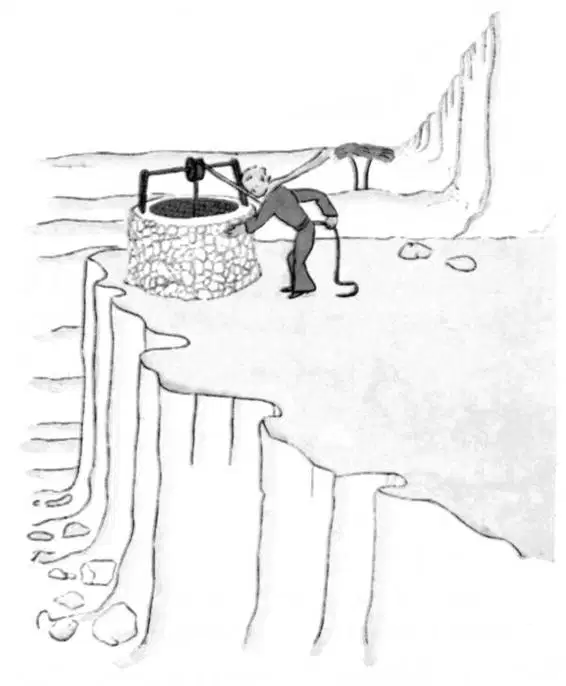

CHAPTER 25
第二十五章
—finding a well, the narrator and the little prince discuss his return to his planet
——找到水井，小王子和叙述者讨论归程
"Men," said the little prince, "set out on their way in express trains, but they do not know what they are looking for. Then they rush about, and get excited, and turn round and round..."
小王子说：“人们乘着高速列车出发，可他们却不知道自己在找什么。然后他们开始冲，兴奋得不得了，转了一圈又一圈……”
And he added:
他又接着说：
"It is not worth the trouble..."
“不值得那么费神……”
The well that we had come to was not like the wells of the Sahara. The wells of the Sahara are mere holes dug in the sand. This one was like a well in a village. But there was no village here, and I thought I must be dreaming...
我们找到的这口井不像撒哈拉沙漠里的井。撒哈拉沙漠的井都只是沙地里挖的洞而已。而这一口就像村子里的水井。可这里又没有什么村庄，所以我想我一定是在做梦。
"It is strange," I said to the little prince. "Everything is ready for use: the pulley, the bucket, the rope...”
“好奇怪，”我对小王子说，“一切都是现成的：辘轳啊，水桶啊，还有绳子……”
He laughed, touched the rope, and set the pulley to working. And the pulley moaned, like an old weathervane which the wind has long since forgotten.
他笑了，摸着绳子，开始转辘轳。辘轳就好像一架好久没有遇到风的旧风标一样，开始呻吟起来。
"Do you hear?" said the little prince. "We have wakened the well, and it is singing..."
“听到了吗？”小王子问，我们把井唤醒了，它在唱歌呢……”

I did not want him to tire himself with the rope.
我不想让他拉绳子累着自己。
"Leave it to me," I said. "It is too heavy for you."
“把它给我吧。”我说道，“对你来说太重了。”
I hoisted the bucket slowly to the edge of the well and set it there—happy, tired as I was, over my achievement. The song of the pulley was still in my ears, and I could see the sunlight shimmer in the still trembling water.
我慢慢地把水桶拉上了井边，把它放好——虽然很累，但我为自己的成果感到很开心。辘轳歌还在我的耳边回响，我能看见阳光在晃动的水面上闪耀。
"I am thirsty for this water," said the little prince. "Give me some of it to drink..."
“我好想喝这水。”小王子说，“拿一些给我喝吧……”
And I understood what he had been looking for.
我很清楚他一直在找什么东西。
I raised the bucket to his lips. He drank, his eyes closed. It was as sweet as some special festival treat. This water was indeed a different thing from ordinary nourishment. Its sweetness was born of the walk under the stars, the song of the pulley, the effort of my arms. It was good for the heart, like a present. When I was a little boy, the lights of the Christmas tree, the music of the Midnight Mass, the tenderness of smiling faces, used to make up, so, the radiance of the gifts I received.
我把桶抬到他的嘴边。他闭上双眼，把水喝了下去。这水就像某个特别的节日盛宴里的美酒一样甘醇。这水的确不同于一般的饮品。它的甜美源于我们的月夜奔波，辘轳的歌声，还有我双臂付出的努力。它就像是一件礼物，是对我们心灵的慰藉。当我还是个小男孩的时候，圣诞树的灯光，午夜弥撒的乐曲，还有那温柔笑脸的抚慰，都曾让我收到的礼物熠熠生辉。
"The men where you live," said the little prince, "raise five thousand roses in the same garden—and they do not find in it what they are looking for.”
“你们这个地方的人，”小王子说，“在同一个园子里养了五千朵玫瑰花——而他们却没有从它们身上找到自己想要的东西。”
"They do not find it," I replied.
“他们确实没找到。”我回答说。
"And yet what they are looking for could be found in one single rose, or in a little water."
“可他们想要的东西，本可从一朵玫瑰或是一点水那里找到。”
"Yes, that is true," I said.
“是的，没错。”我说。
And the little prince added:
小王子接着说：
"But the eyes are blind. One must look with the heart..."
“可是眼睛却看不见。必须用心去看……”
I had drunk the water. I breathed easily. At sunrise the sand is the color of honey. And that honey color was making me happy, too. What brought me, then, this sense of grief?
我喝了水。我轻松地呼吸着。日出时，沙漠一片蜜色。那蜜色也让我开心不已。有什么会让我悲伤呢？
"You must keep your promise," said the little prince, softly, as he sat down beside me once more.
“你必须信守诺言。”小王子再次在我身边坐下，轻声说。
"What promise?"
“什么诺言？”
"You know—a muzzle for my sheep... I am responsible for this flower...”
“你知道——我的羊的嘴套子啊……我要对我的花负责呀……”
I took my rough drafts of drawings out of my pocket. The little prince looked them over, and laughed as he said:
我从口袋里掏出几张潦草的画稿。小王子瞅了瞅，笑着说：
"Your baobabs—they look a little like cabbages.”
“你画的猴面包树——他们有点像卷心菜。”
"Oh!"
“噢！”
I had been so proud of my baobabs!
我一直很为自己的猴面包树骄傲呢！
"Your fox—his ears look a little like horns; and they are too long.”
“你画的狐狸——他的耳朵有点像犄角，它们太长了。”
And he laughed again.
他又笑了起来。
"You are not fair, little prince," I said. "I don't know how to draw anything except boa constrictors from the outside and boa constrictors from the inside."
“这不公平，小王子。”我说，“除了画张着肚皮的大蟒蛇和关着肚皮的大蟒蛇之外，我什么都不会画。”
"Oh, that will be all right," he said, "children understand."
“哦，那没什么关系，”他说，“孩子们都能理解。”
So then I made a pencil sketch of a muzzle. And as I gave it to him my heart was torn.
于是，我用铅笔勾画了个嘴套子。而当我把这个给他的时候，我的心都碎了。
"You have plans that I do not know about," I said.
“你有你的打算，而并不知晓。”我说。
But he did not answer me. He said to me, instead:
可他并没有回应我。他却对我说：
"You know—my descent to the earth... Tomorrow will be its anniversary.”
“告诉你——自从我落到地球上起……到明天就是一周年了。”
Then, after a silence, he went on:
沉默了一会，他又继续说：
"I came down very near here."
“我当时就落在这儿附近。”
And he flushed.
他开始脸红了。
And once again, without understanding why, I had a queer sense of sorrow. One question, however, occurred to me:
不知为何，我又莫名其妙地感到一丝忧伤。不过，我想到了一个问题：
"Then it was not by chance that on the morning when I first met you—a week ago—you were strolling along like that, all alone, a thousand miles from any inhabited region? You were on the your back to the place where you landed?”
“那么，在我碰到你的那天早上——就是一个星期前，你独自一人晃到这里，不是偶然的吧？你是要回到你落下的地方吗？”
The little prince flushed again.
小王子又脸红了。
And I added, with some hesitancy:
接着，我有些犹豫，问道：
"Perhaps it was because of the anniversary?"
“或许是因为这一周年纪念日的原因？”
The little prince flushed once more. He never answered questions—but when one flushes does that not mean "Yes"?
小王子再次红了脸。他从不回答这些问题——只是当一个人脸红的时候，是不是就等于默认了呢？
"Ah," I said to him, "I am a little frightened—”
“啊，”我对他说，“我有点怕——”
But he interrupted me.
可他打断了我的话。
"Now you must work. You must return to your engine. I will be waiting for you here. Come back tomorrow evening..."
“现在你得工作了。你必须回到你的引擎那里。我会在这里等你。明晚回到这里来……”
But I was not reassured. I remembered the fox. One runs the risk of weeping a little, if one lets himself be tamed...
可我却很不放心。我想起了那只狐狸。一个人若是让自己被驯服了，就得冒伤心哭泣的危险啊……